Content angle là gì? Phân biệt pillar, topic và góc viết
Content angle (góc tiếp cận nội dung) là cách khai thác một chủ đề để giải đáp một vấn đề cụ thể cho nhóm người đọc xác định. Content pillar là nhóm chủ đề lớn thương hiệu theo đuổi; content topic là chủ đề của từng bài; còn content angle quyết định bài viết tập trung vào khía cạnh nào. Chẳng hạn, với chủ đề “ứng dụng AI trong marketing”, bài viết có thể hướng dẫn chọn công cụ cho đội ngũ ít người hoặc phân tích cách kiểm soát nội dung AI trước khi đăng. Góc tiếp cận rõ giúp người viết biết cần giải thích điều gì và người đọc hiểu bài viết có ích với mình ở đâu. Bài viết này giúp bạn phân biệt pillar, topic và angle, nhận diện những góc viết dễ trùng lặp và xây dựng brief nội dung có trọng tâm.
- Đăng ngày
- Cập nhật

Tóm tắt nhanh
- Angle trả lời câu hỏi bài viết giải quyết vấn đề gì cho ai, còn topic chỉ cho biết bài nói về cái gì.
- Nghiên cứu của Ahrefs trên khoảng 14 tỷ trang cho thấy 96,55% số trang không nhận được lượt truy cập tự nhiên nào từ Google.
- Cột bằng chứng cần có là thứ quyết định nên tách thành hai bài hay gộp lại thành một.
- Thang bốn bước ở cuối bài giúp bạn kiểm tra hai bài có trùng góc hay không trước khi tạo thêm một URL mới.
Mục lục bài viết10 phần
Content angle là gì và giúp giải quyết vấn đề nào?
Content angle (góc tiếp cận nội dung) là quyết định biên tập về việc người viết đứng ở đâu để nhìn một vấn đề: người đọc là ai, câu hỏi họ cần giải quyết là gì, và bằng chứng nào phù hợp với câu hỏi đó. Góc tiếp cận có ích phải làm thay đổi trọng tâm giải thích, chứ không chỉ đổi cách đặt tiêu đề.
Chẳng hạn, người mua ghế cho mình quan tâm cảm giác ngồi và khả năng điều chỉnh. Người phụ trách mua cho một văn phòng còn phải cân nhắc sự khác nhau giữa các nhân viên, việc thử mẫu và điều kiện bảo trì. Hai nhóm cùng quan tâm tới ghế nhưng có nhiệm vụ ra quyết định hoàn toàn khác nhau.
Angle giúp giới hạn phạm vi bài. Khi chọn câu hỏi mua cho cả đội, bài cần ưu tiên cách thu thập nhu cầu và cách đánh giá một lựa chọn chung. Lịch sử thiết kế ghế có thể thú vị, nhưng không phải trọng tâm của quyết định này.
Giới hạn phạm vi chính là công dụng thực tế nhất của góc tiếp cận: nó cho người viết một lý do để bỏ bớt, chứ không chỉ một lý do để viết thêm. Nếu chỉ đổi tiêu đề từ mẹo chọn ghế thành bí quyết chọn ghế mà nội dung giữ nguyên, bạn chưa tạo ra thêm giá trị nào.
Content pillar, content topic và content angle khác nhau ra sao?
Trong bài này, pillar được dùng theo nghĩa nhóm chủ đề chiến lược, topic là chủ đề của một nội dung cụ thể, còn angle là vấn đề được ưu tiên giải thích trong chủ đề ấy. Đây là quy ước làm việc để đội viết thống nhất, vì các tài liệu khác nhau có thể dùng thuật ngữ ở những cấp khác nhau.
| Lớp nội dung | Câu hỏi cần trả lời | Ví dụ nội thất văn phòng |
|---|---|---|
| Content pillar | Thương hiệu theo đuổi nhóm vấn đề nào? | Nội thất cho văn phòng nhỏ |
| Content topic | Bài này nói về điều gì? | Chọn ghế làm việc |
| Content angle | Giải thích cho ai và xử lý vấn đề gì? | Mua ghế cho đội 10 người |
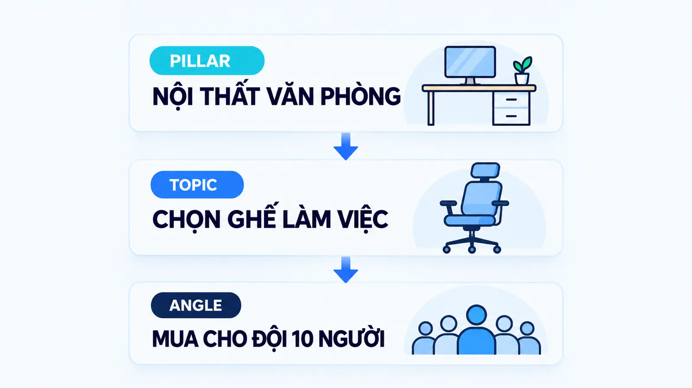
Trong SEO, bạn còn gặp khái niệm pillar page, tức trang tổng quan liên kết với các bài chuyên sâu. HubSpot mô tả mô hình topic cluster theo cấu trúc một trang trụ cột và nhiều trang chủ đề con. Trang trụ cột là một cách tổ chức website, không đồng nghĩa mọi nhóm chủ đề trên lịch nội dung đều phải có một URL riêng.
Vì sao góc tiếp cận quyết định bài có được đọc hay không?
Câu trả lời ngắn: vì phần lớn nội dung trên internet không được ai đọc, và hai trong ba nguyên nhân phổ biến nhất đều là vấn đề của angle chứ không phải vấn đề kỹ thuật.
Ahrefs công bố ngày 01 tháng 12 năm 2023 một nghiên cứu quét khoảng 14 tỷ trang web trong cơ sở dữ liệu Content Explorer. Kết quả: 96,55% số trang không nhận được lượt truy cập tự nhiên nào từ Google, và thêm 1,94% chỉ nhận từ 1 đến 10 lượt mỗi tháng.
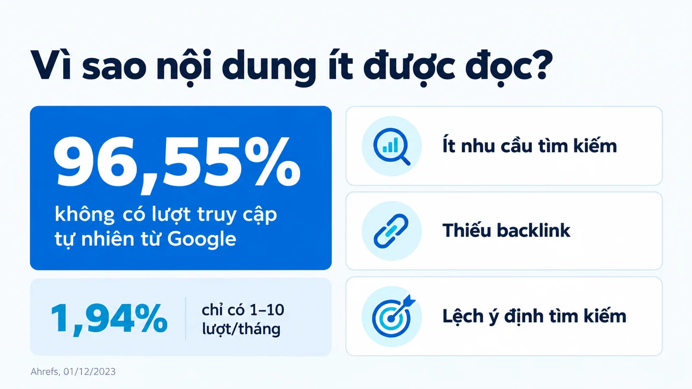
Nhóm nghiên cứu nêu ba nguyên nhân chính: chủ đề không có nhu cầu tìm kiếm, trang không có backlink, và trang không khớp với ý định tìm kiếm. Nguyên nhân thứ hai thuộc về offpage, nhưng nguyên nhân thứ nhất và thứ ba đều là việc của người chọn góc.
Chủ đề không có nhu cầu tìm kiếm nghĩa là bạn đang trả lời một câu hỏi không ai đặt ra. Không khớp ý định tìm kiếm nghĩa là bạn trả lời đúng chủ đề nhưng sai câu hỏi, chẳng hạn người đọc cần tiêu chí so sánh còn bài lại kể lịch sử sản phẩm.
Nhóm nghiên cứu cũng ghi rõ giới hạn của chính họ: 14 tỷ trang chỉ là một phần của internet, và ước lượng lưu lượng dựa trên cơ sở khoảng 651 triệu từ khóa nên có thể bỏ sót phần đuôi dài. Con số 96,55% vì vậy nên đọc như một chỉ dấu về mức độ dư thừa nội dung, không phải một tỷ lệ chính xác tuyệt đối.
Google đánh giá một content angle có giá trị bằng câu hỏi nào?
Google công bố công khai bộ câu hỏi để người tạo nội dung tự đánh giá tác phẩm của mình. Bốn câu trong số đó áp thẳng vào việc chọn góc, và đáng để dán lên tường phòng nội dung.
- Có gì riêng không: Nội dung có thông tin gốc, tường thuật, nghiên cứu hay phân tích của riêng bạn không?
- Có đáng tồn tại không: Nội dung có giá trị đáng kể so với các trang khác đang xếp hạng không?
- Viết cho ai: Nội dung này có phải chủ yếu tạo ra để hút truy cập từ công cụ tìm kiếm không?
- Người đọc có đủ chưa: Nội dung có khiến người đọc phải tìm thêm nguồn khác để có thông tin tốt hơn không?
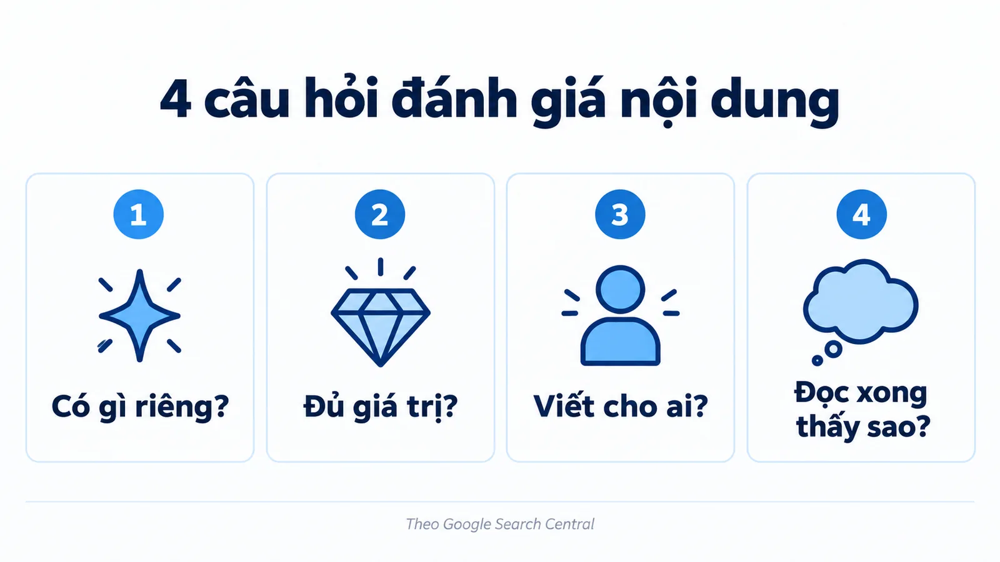
Đọc bốn câu theo thứ tự sẽ thấy chúng chính là bộ lọc angle. Câu một hỏi bạn có gì riêng. Câu hai hỏi cái riêng đó có đủ để tồn tại bên cạnh những trang đã có. Câu ba hỏi động cơ thật của bài. Câu bốn hỏi kết quả cuối cùng với người đọc.
Một góc tiếp cận chỉ đổi nhãn tiêu đề sẽ trượt cả bốn câu, dù tiêu đề nghe hấp dẫn tới đâu. Lưu ý cách đọc: đây là hướng dẫn tự đánh giá, không phải danh sách yếu tố xếp hạng. Google không công bố trọng số cho từng câu hỏi, và trả lời tốt bốn câu này cũng không bảo đảm thứ hạng.
Giá trị của chúng nằm ở chỗ cho đội nội dung một ngôn ngữ chung để tranh luận về chất lượng, thay vì tranh luận bằng cảm tính.
Một chủ đề có thể khai thác bằng những content angle nào?
Xét một doanh nghiệp SME (doanh nghiệp vừa và nhỏ) bán nội thất cho văn phòng nhỏ. Đây là ví dụ biên tập giả định. Doanh nghiệp chọn topic chọn ghế làm việc và muốn giải thích vấn đề mua sắm, thay vì chỉ đăng ảnh sản phẩm.
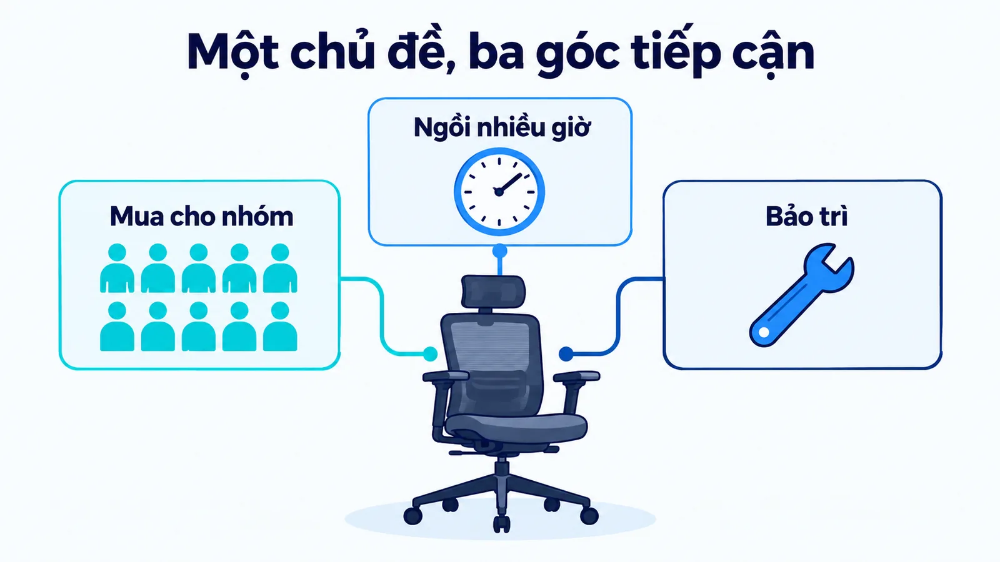
Góc mua cho một nhóm nhân viên
Câu hỏi là làm sao chọn ghế khi cả đội có nhu cầu khác nhau. Nội dung có thể giải thích việc thu thập nhu cầu, thử mẫu, khả năng điều chỉnh và điều kiện bảo hành. Người đọc nhận được tiêu chí đánh giá một lựa chọn chung, thay vì danh sách tính năng của từng ghế.
Đội 10 người chỉ là bối cảnh giả định, không phải chuẩn mua sắm. Nếu doanh nghiệp chưa có dữ liệu thử mẫu, bài cần nói rõ và không tự tạo ra kết luận rằng một mẫu phù hợp với mọi nhân viên.
Góc lựa chọn khi ngồi làm việc nhiều giờ
Câu hỏi chuyển sang: người dùng nên thử và đánh giá những đặc điểm nào. Bài tập trung vào khả năng điều chỉnh, cảm giác sử dụng và sự phù hợp với bàn làm việc. Dữ kiện có thể đến từ thông số xác nhận được và hướng dẫn của nhà sản xuất.
Góc này không cho phép người viết hứa rằng một chiếc ghế sẽ chữa đau lưng hoặc ngăn bệnh. Khẳng định về sức khỏe cần căn cứ chuyên môn riêng, vì thông số sản phẩm không tự chứng minh tác dụng điều trị.
Góc bảo trì sau khi mua
Câu hỏi là điều gì cần kiểm tra để ghế còn dùng được khi một bộ phận hao mòn. Bài giải thích linh kiện thay thế, điều kiện bảo hành và hướng dẫn vệ sinh theo tài liệu sản phẩm. Người đọc có thêm tiêu chí về chi phí sử dụng dài hạn.
Góc bảo trì khác góc mua cho nhóm dù cả hai cùng nhắc tới bảo hành. Ở bài mua sắm, bảo hành là một tiêu chí chọn; ở bài bảo trì, nó gắn với tình huống xử lý cụ thể. Khác biệt nằm ở nhiệm vụ giải thích của toàn bài.
Đặt ba góc cạnh nhau theo cùng ba cột sẽ thấy ngay góc nào đủ khác để trở thành một bài riêng.
| Góc tiếp cận | Câu hỏi chính | Bằng chứng cần có |
|---|---|---|
| Mua cho nhóm | Cả đội khác nhu cầu thì chọn sao? | Cách thu thập nhu cầu, quy trình thử mẫu, dải điều chỉnh |
| Ngồi nhiều giờ | Nên thử những đặc điểm nào? | Thông số xác nhận được, cảm giác dùng, độ phù hợp với bàn |
| Bảo trì sau mua | Hao mòn thì cần kiểm tra gì? | Danh mục linh kiện, tình huống hao mòn, phạm vi bảo hành |
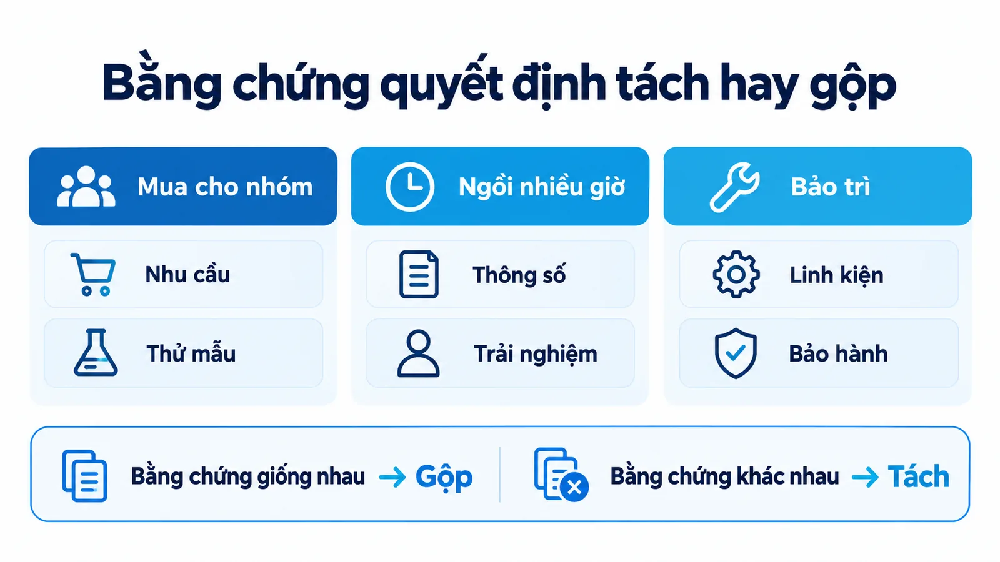
Cột bằng chứng cần có là cột quyết định. Nếu hai góc dùng chung một bộ bằng chứng, chúng gần như chắc chắn nên nằm trong cùng một bài. Nếu mỗi góc đòi một loại tài liệu khác nhau, đó là dấu hiệu tách bài hợp lý.
Content angle có phải giọng điệu hay định dạng không?
Không. Angle là câu hỏi mà bài trả lời, tone là cách biểu đạt, format là hình thức trình bày, còn hook là điểm mở thu hút chú ý. Bốn thứ này nằm ở bốn lớp khác nhau, và thay đổi một lớp không tự động thay đổi lớp còn lại.
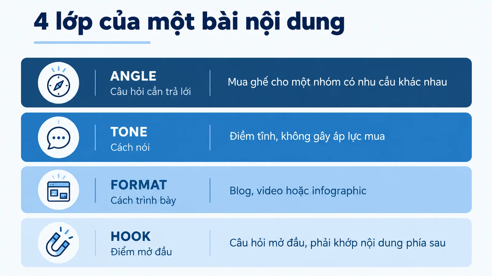
Đổi giọng hay đổi định dạng không tạo ra góc mới
Một bài mua ghế cho nhóm có thể viết điềm tĩnh dưới dạng blog hoặc trình bày bằng video, nhưng câu hỏi chính vẫn giữ nguyên. Đổi sang giọng vui hoặc chuyển bài thành infographic chưa chắc tạo ra góc mới.
Ngược lại, hai bài cùng dùng giọng trung tính vẫn có thể giải thích những vấn đề hoàn toàn khác nhau. Bạn có thể đọc thêm brand voice và tone of voice để hiểu rõ phần cá tính và biểu đạt.
Hook phải khớp với nội dung phía sau
Nếu mở bài bằng lời hứa tiết kiệm một nửa chi phí nhưng không có dữ liệu chứng minh, sự hấp dẫn ban đầu sẽ làm sai kỳ vọng của người đọc. Đây cũng là chỗ dễ trượt câu hỏi thứ tư trong bộ tự đánh giá của Google: người đọc bị kéo vào rồi vẫn phải đi tìm nguồn khác.
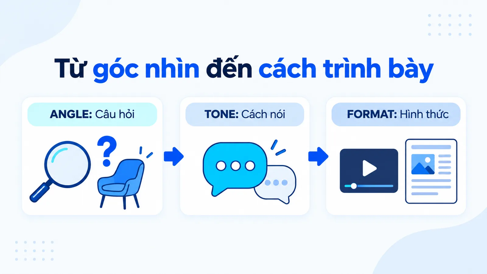
Viết brief cho một content angle theo mẫu nào?
Hãy dùng mẫu viết nhu cầu người dùng của GOV.UK. Đây là chuẩn công khai trong Service Manual của chính phủ Anh, và nó buộc người viết nói rõ ba thứ mà một góc tiếp cận cần có.
- Người dùng là ai: Nhóm người đọc cụ thể, gọi bằng chính ngôn ngữ họ dùng, không phải ngôn ngữ nội bộ.
- Điều gì kích hoạt: Tình huống khiến nhu cầu đó xuất hiện, ví dụ vừa được giao nhiệm vụ mua sắm.
- Tôi cần làm gì: Việc người đọc cần hoàn thành sau khi đọc xong bài viết của bạn.
- Để đạt điều gì: Kết quả cuối cùng mà người đọc nhắm tới, không phải mục tiêu của thương hiệu.
- Ràng buộc nào: Hoàn cảnh giới hạn lựa chọn của họ, chẳng hạn ngân sách hoặc thời gian gấp.
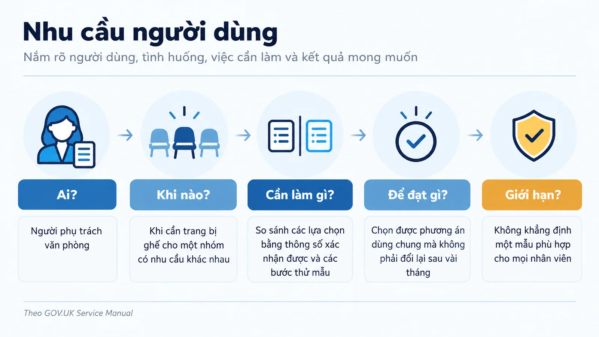
Áp vào ví dụ nội thất, một brief đầy đủ sẽ có dạng: là người phụ trách văn phòng, khi cần trang bị ghế cho một nhóm có nhu cầu khác nhau, tôi cần so sánh các lựa chọn bằng thông số xác nhận được và các bước thử mẫu, để chọn được phương án dùng chung mà không phải đổi lại sau vài tháng.
So sánh câu đó với một brief kiểu viết bài về ghế văn phòng cho doanh nghiệp sẽ thấy khác biệt rất rõ. Câu thứ nhất nói rõ người đọc, tình huống kích hoạt, loại bằng chứng và kết quả mong muốn. Câu thứ hai chỉ nói mỗi chủ đề.
Chỉ câu thứ nhất mới giúp người viết quyết định phần nào nên có và phần nào nên để lại cho bài khác. Với mỗi brief, hãy ghi thêm một dòng giới hạn: điều gì bài này không được khẳng định.
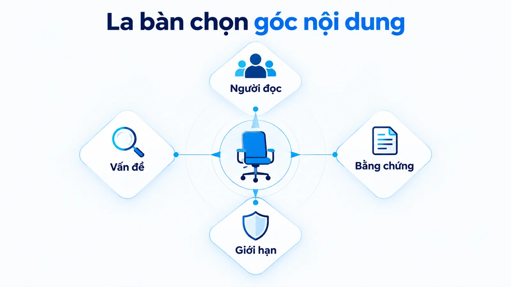
Trong ví dụ trên, giới hạn là không khẳng định một mẫu phù hợp cho mọi nhân viên. Dòng giới hạn giúp người duyệt bắt lỗi nhanh hơn nhiều so với việc đọc lại cả bài từ đầu.
Nếu dùng AI để soạn bản nháp từ brief, dòng giới hạn này càng quan trọng, vì mô hình có thể tự thêm dữ kiện nghe hợp lý nhưng chưa có căn cứ. Cơ chế và quy trình duyệt được trình bày trong bài Ảo giác AI là gì.
Tôi ưu tiên một tiêu chí biên tập khi duyệt: bỏ tiêu đề đi, phần giải thích có còn cho thấy rõ bài đang phục vụ ai và giải quyết câu hỏi nào không. Nếu không, angle có thể mới chỉ nằm trên nhãn của bài. Nếu dùng AI để đề xuất ý tưởng, hãy coi danh sách angle là bản nháp và duyệt lại tính khác biệt cùng khả năng tìm nguồn.
Làm sao kiểm tra hai bài có trùng content angle không?
Chạy bốn bước dưới đây theo đúng thứ tự, và dừng lại ở bước đầu tiên cho kết quả trùng. Thứ tự này đi từ dấu hiệu rõ nhất tới dấu hiệu cần cân nhắc nhiều nhất.
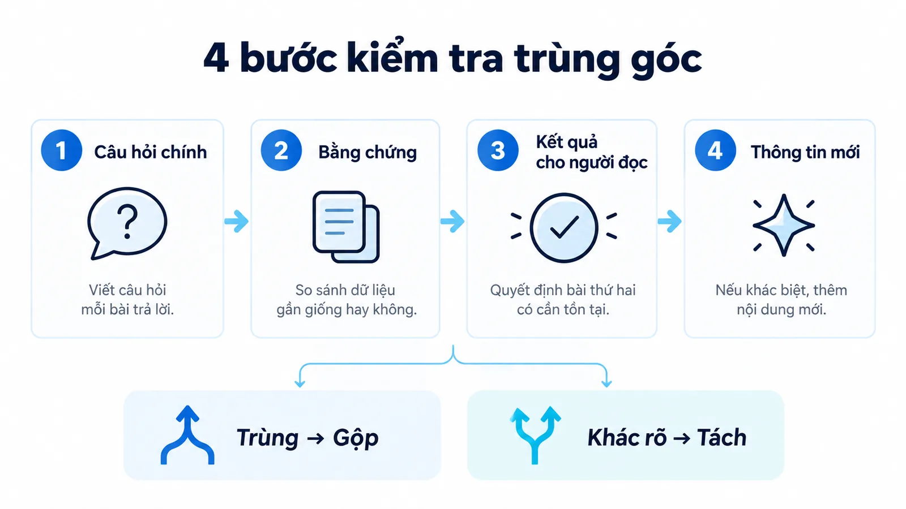
Bước 1: Đối chiếu câu hỏi chính
Viết câu hỏi mà mỗi bài trả lời thành đúng một câu. Nếu hai câu diễn đạt khác nhau nhưng cùng một nhiệm vụ, hai bài đang trùng góc.
Đầu ra: hai câu hỏi viết cạnh nhau, đủ rõ để người khác so được.
Bước 2: Đối chiếu bằng chứng cần có
Liệt kê tài liệu, ví dụ và số liệu mà mỗi bài phải có. Nếu hai bài dùng chung một bộ, phần giá trị mới gần như bằng không.
Đầu ra: hai danh sách bằng chứng, đánh dấu phần trùng nhau.
Bước 3: Đối chiếu kết quả người đọc nhận được
Ghi ra quyết định mà người đọc có thể đưa ra sau khi đọc xong. Nếu hai bài dẫn tới cùng một quyết định, bài thứ hai không cần tồn tại.
Đầu ra: hai câu mô tả quyết định, viết ở ngôi của người đọc.
Bước 4: Ước lượng phần thông tin mới
Đo xem phần khác biệt thật sự dài bao nhiêu. Nếu chỉ đủ cho một đoạn, thêm đoạn đó vào bài hiện có hợp lý hơn là tạo một URL mới.
Đầu ra: quyết định gộp hoặc tách, kèm lý do ghi lại được.
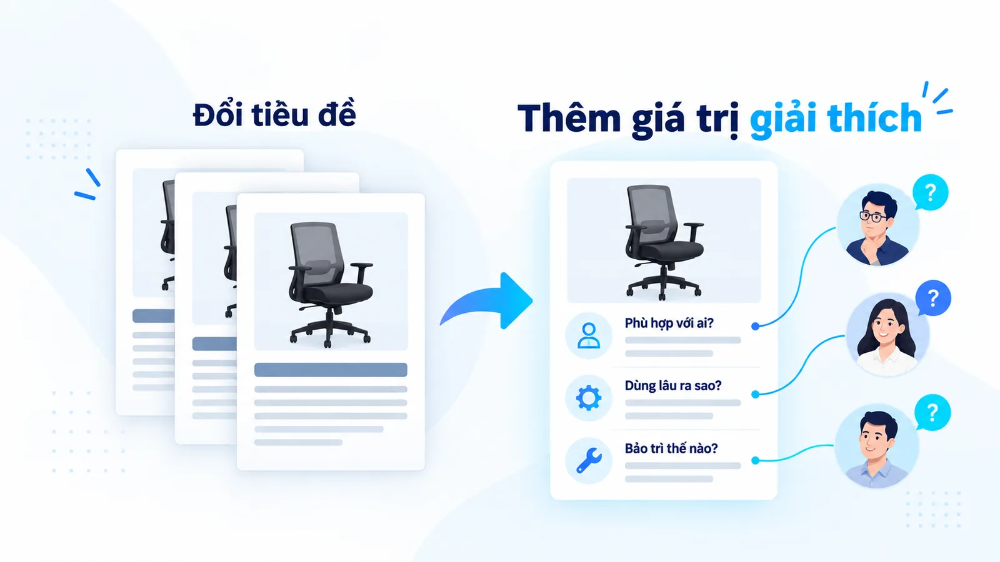
Nội dung bị lặp thường xuất hiện dưới một dạng rất dễ nhận: các bài đổi nhóm độc giả trên tiêu đề nhưng dùng cùng lập luận, cùng ví dụ và cùng kết luận. Cho startup, cho SME và cho văn phòng nhỏ có thể cùng một nhu cầu, nên tách thành ba bài chỉ vì ba cái nhãn chưa chắc giúp được người đọc.
Đây cũng là nơi con số 96,55% ở phần trước có ý nghĩa thực tế. Mỗi bài trùng góc là một URL gần như chắc chắn rơi vào nhóm không có lượt truy cập, đồng thời chia nhỏ tín hiệu của những bài lẽ ra đã đủ mạnh. Gộp lại thường cho kết quả tốt hơn tách ra.
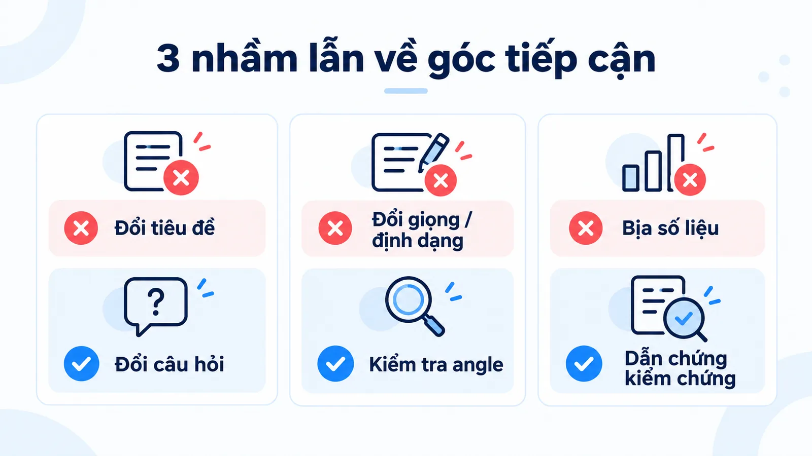
Cuối cùng, đừng dùng số liệu hoặc lời chuyên gia tưởng tượng để làm cho góc tiếp cận trông độc đáo. Ví dụ giả định cần được ghi rõ, còn sự kiện thật cần nguồn kiểm tra được. Cách tôi tách các lớp đo lường trong bài về micro conversion cũng theo đúng nguyên tắc này.
Câu hỏi thường gặp về content angle
Một bài có thể chứa nhiều content angle không?
Có, nếu các góc cùng phục vụ một câu hỏi chính và không làm bài mất trọng tâm. Khi mỗi góc cần phần giải thích dài cho một nhiệm vụ khác nhau, bạn nên cân nhắc tách bài. Thang bốn bước ở phần trên là cách quyết định nhanh và có căn cứ.
Có phải angle luôn phải mới chưa ai viết?
Không. Một cách giải thích phù hợp hơn với bối cảnh người đọc vẫn có giá trị riêng. Tính hữu ích và căn cứ quan trọng hơn việc cố tạo ra một quan điểm lạ. Bộ câu hỏi tự đánh giá của Google cũng hỏi về giá trị đáng kể so với các trang khác, chứ không hỏi về tính mới tuyệt đối.
Có bao nhiêu content pillar là hợp lý?
Không có con số cố định cho mọi doanh nghiệp. Hãy chọn theo nhu cầu khách hàng, định hướng thương hiệu và khả năng duy trì chất lượng. Số nhóm ít nhưng rõ ràng thường dễ vận hành hơn một danh sách rộng mà thiếu chiều sâu.
Content angle khác search intent ở điểm nào?
Search intent là ý định của người tìm kiếm, tồn tại sẵn trước khi bạn viết. Angle là quyết định biên tập của bạn về việc phục vụ ý định nào và phục vụ tới đâu. Một intent có thể được phục vụ bằng vài angle khác nhau, nhưng một angle không khớp intent nào thì gần như không có người đọc.
Có nên viết nhiều angle cho cùng một từ khóa không?
Thường là không. Nhiều bài nhắm cùng một từ khóa với cùng một ý định sẽ cạnh tranh lẫn nhau trong kết quả tìm kiếm. Nếu các góc thật sự khác nhau, chúng cũng sẽ khớp những truy vấn khác nhau, và khi đó việc tách bài là hệ quả tự nhiên chứ không phải mục tiêu.
Kết luận
Một content angle tốt giúp bạn quyết định thông tin nào cần có và thông tin nào nên để lại cho bài khác. Trước khi viết thêm một bài, hãy xác định câu hỏi mới mà người đọc sẽ được giải quyết, rồi mới bàn tới tiêu đề và hình thức trình bày.
Hãy bắt đầu bằng mẫu brief năm vế ở trên, và chạy thang bốn bước mỗi khi định thêm một URL mới. Bạn có thể đọc thêm các bài cùng mảng trong chủ đề Marketing của Góc kiến thức, hoặc xem phần năng lực chuyên môn trên trang hồ sơ của tôi.